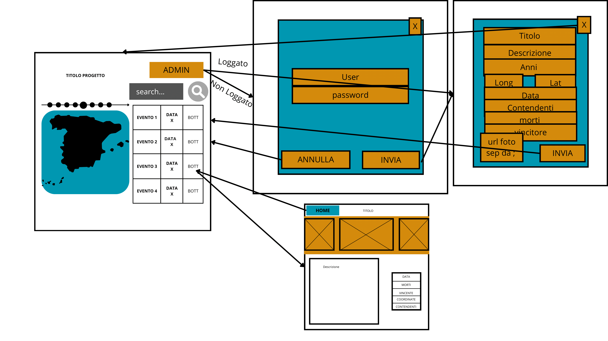

Documentazione
Guerra di Spagna
Descrizione progetto Obiettivo di questo progetto è la realizzazione di una applicazione web che mostra un insieme di punti di interesse su una mappa su un determinato tema o soggetto (questo progetto è basato specificamente sulla Guerra di Spagna).
- Classe/Anno: 5C informatica - 24/25
- Author: Kotis Alexandros, Emanuele Meregalli, Rodia Thomas
- Creato: 7 gennaio 2025
- Ultima modifica: 7 gennaio 2025
Architettura informazione
Struttura dell’applicazione
L’applicazione mostrerà un sito web che conterrà una pagina “home” che mostra i punti di interesse del tema selezionato sia in "vista mappa" sia in "vista elenco", oltre ad una descrizione introduttiva dei contenuti rispetto al tema scelto. Al click sul punto di interesse (sia sulla mappa che sull’elenco) si apre la pagina di dettaglio, che contiene le informazioni in maniera completa.
Sarà infine prevista una pagina di amministrazione che mostrerà l’elenco dei punti di interesse e sarà possibile aggiungerne di nuovi o modificare/cancellare gli esistenti, che sarà accessibile solo tramite login.
Contenuti
I contenuti saranno predisposti e realizzati in accordo e con la supervisione del docente di materia, in ogni caso sono previsti almeno 10 punti di interesse. Compito di ciascun gruppo è definire gli attributi specifici dei punti di interesse del proprio argomento scelto, oltre ovviamente a titolo, descrizione e foto. Ad esempio per un luogo di storia potrebbero essere la data, le conseguenze, per una battaglia le forze in campo, i morti e feriti, per un luogo di letteratura l’opera in cui compare, ecc.
Requisiti tecnici
L’applicazione sarà erogata in modalità SPA (Single Page Application) quindi con una sola pagina HTML ma URL dinamica definita da un suffisso di pagina che definisce univocamente pagina e contenuto nel seguente modo:.
| #home | indica la pagina principale della SPA | |
| #detail_{id} | indica l'id del punto di interesse | |
| #admin | pagina di amministrazione | |
UML
Qui vanno inseriti i vari diagrammi UML
Diagramma di Casi d'uso
Diagramma di casi d'uso non previsto.
Diagrammi di oggetti

Diagrammi di Stato

Diagrammi di Sequenza

Contenuti del progetto
| # | Nome dell'Luogo | Descrizione | Foto | Coordinate | Data | Contendenti | Morti | Vincitori |
|---|---|---|---|---|---|---|---|---|
| 1 | Bombardamento di Guernica | |||||||
| 2 | Battaglia di malaga | |||||||
| 3 | Conquista di Barcellona | |||||||
Wireframes

Il progetto
Credenziali da inserirei per l'utente Amministratore: Username: utenteAmministratore password: !amministratore!